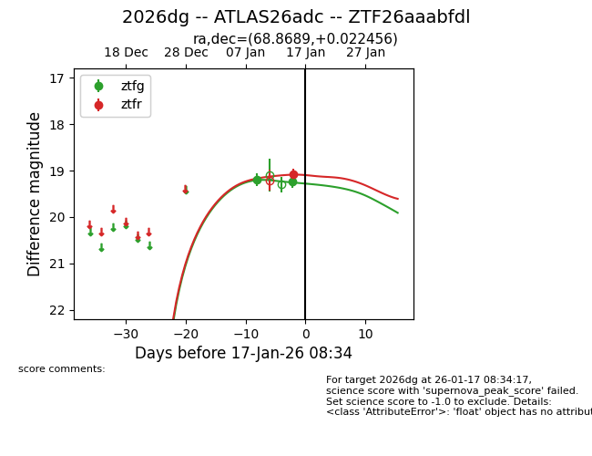
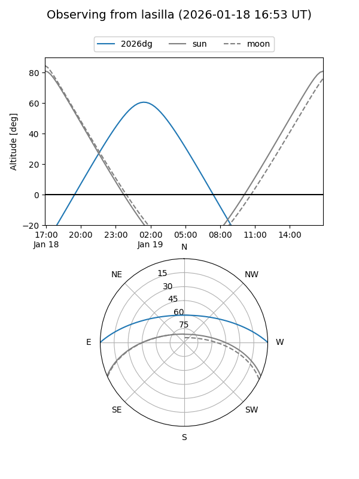
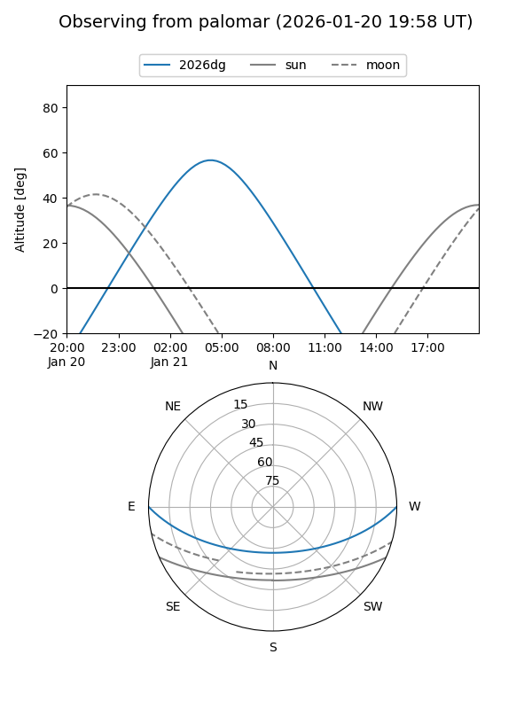
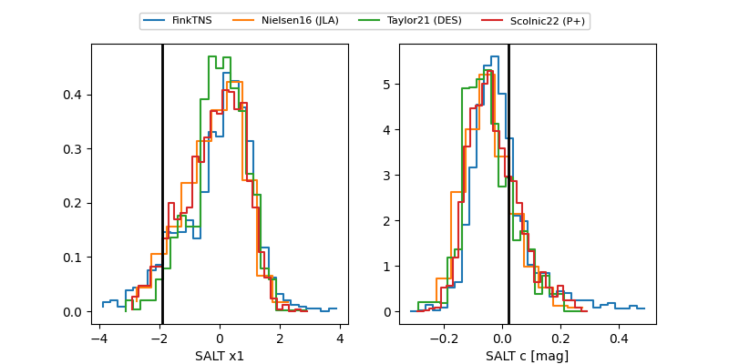

2026dg
Target 2026dg at 2026-01-19 05:20
Aliases and brokers:
FINK: link
Lasair: link
ALeRCE: link
TNS: link
YSE: link
alt names
ZTF26aaabfdl (ztf,fink_ztf)
2026dg (tns,yse)
ATLAS26adc (atlas)
Coordinates:
equatorial (ra, dec) = 68.8689,+0.02246
equatorial (HMS+DMS) = 04:35:28.53,+00:01:20.84
galactic (l, b) = (195.8195,-29.82650)
Flags:
Photometry:
last ztfg=19.23, ztfr=19.27
2 ztfg, 2 ztfr detections
Lightcurve

Visibility


Additional plots
